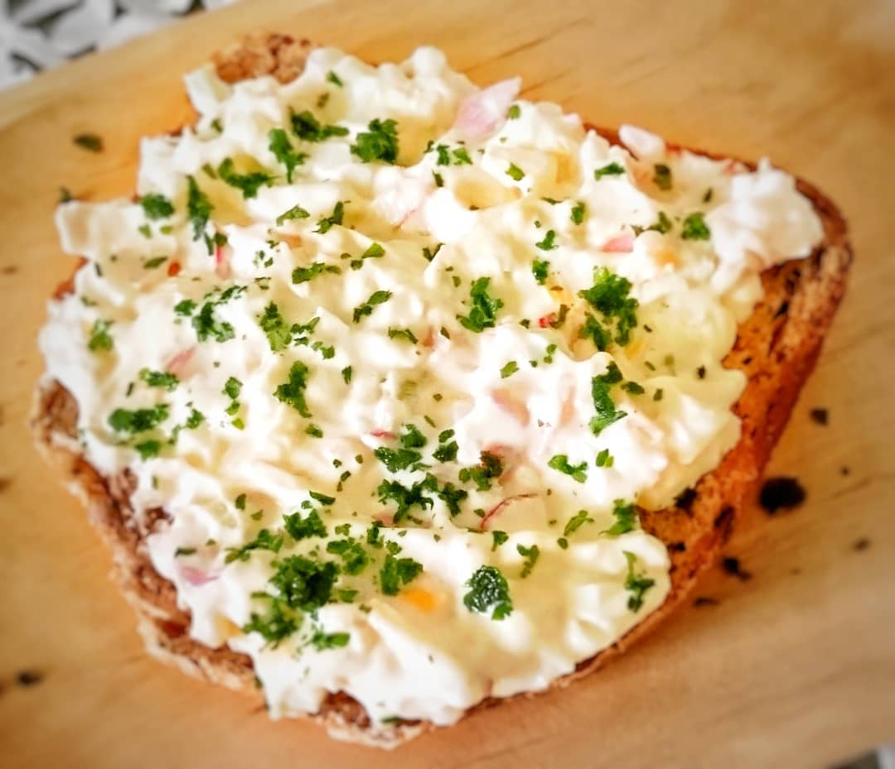

Syrová nátierka so všetkým čo máte radi...do nátierky kľudne pridajte čo vám chutí 😋
➡️ Na 200g taveného syra dávam 1 črievkový syr a cca lyžicu 🥄 masla Flora línia
➡️ Premiešam, osolím, okorením a pridám zeleninu 🥗 / papriku, cibuľku, reďkovky, varené vajíčka 🥚, dusenú šunku s vysokým obsahom mäsa... Podľa chuti kto čo má rád.
➡️ Najviac chutí keď necháte odstáť, aby sa chute spojili 🤤
#recipes #recipe #recepty #food #foodporn #fitfood #mojerecepty
#bielkoviny #bilkoviny #dnesjem
#mojejedlo #ranajky #vecera #syr #natierka #natierky #syrovanatierka #desiata #zdravastrava #zdraverecepty #jeme #jem #luckatvojvodnyanjel